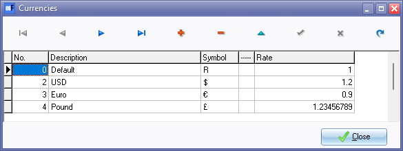

Currencies
In osFinancials, users have the capability to engage in international transactions, purchasing goods from foreign suppliers and selling goods to customers in foreign countries. osFinancials allows users to process and print documents in foreign currencies. However, before they can do so, it is necessary to add and/or update the currencies in the Set of Books.
The Currencies feature in osFinancials is particularly beneficial for businesses dealing with international transactions, streamlining financial processes for processing and printing sales documents and purchase documents in various currencies.
Currencies functionality overview
Here's a breakdown of the functionalities:
- Add / Edit / Delete Currencies: osFinancials5 allows users to manage a list of currencies. You may add new currencies, edit existing ones (e.g., update exchange rates), and also remove currencies that are no longer needed.
- Processing Multi-currency Documents: Once the currencies is added and or updated, users can select the currency applicable to their debtors (customers/clients) when processing sales documents such as invoices, credit notes, and quotes. When processing purchase documents such as purchases, supplier returns, and orders, users can select or specify the currency applicable to their for creditors (suppliers / vendors).
- Printing Currency in Document Layouts: Once a currency is selected for a specific document, osFinancials incorporates this information into the document layout files. This means that the selected currency will be visibly printed on the documents, ensuring clarity and transparency in financial transactions.
- Printing a List of Currencies in Reports: You may print a "Currencies - Listing" report in the Reports → Currencies menu.
Overall, this currency management and multi-currency document handling feature set are valuable for businesses and organizations that deal with international transactions and need to manage financial records in different currencies. It streamlines the process, ensures accuracy, and facilitates transparency in financial dealings.
To add currencies:
- On the Setup ribbon, select Setup → Currencies.

- Click on the add icon to create a new record.
- Enter the description, currency symbol and currency rate.
|
Alt Code Shortcuts for Currency Symbols - Example Works if the Alt+0165 for the Japanese Yen, etc. |
- Click on the save icon.